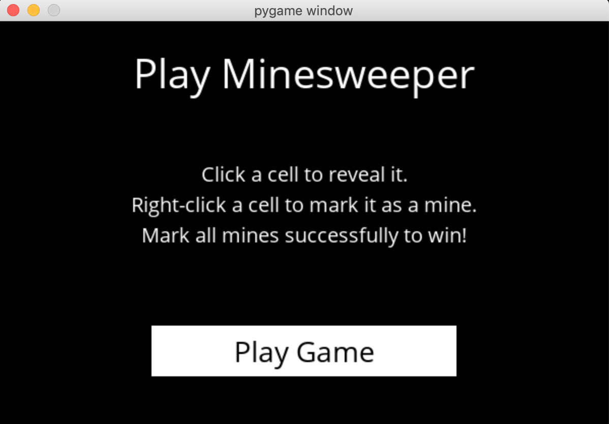

GITHUB LINK: https://github.com/jhartfie/MineSweeperAi
Minesweeper with AI-Assisted Safe Moves
This project breathes new life into the classic game of Minesweeper by
incorporating an advanced feature that allows players to either navigate
the minefield themselves or utilize an "AI Move" option. This innovative
addition guarantees a safe move, significantly enhancing gameplay and
demonstrating the practical application of artificial intelligence in
improving user experience. Coded with precision, the program not only
offers a fun and engaging way to play Minesweeper but is also capable of
consistently achieving victory, showcasing the effectiveness of its
underlying algorithms.
Interactive Gameplay:
Players have the freedom to approach the game in the traditional manner,
applying strategy and logic to avoid mines and clear the board. The
interface is designed for ease of use, allowing for intuitive navigation
and a satisfying gaming experience.
AI-Assisted Moves:
The "AI Move" button introduces a layer of intelligence to the game,
providing players with a fail-safe option when the next move is not
immediately apparent. This feature leverages a sophisticated algorithm
to analyze the current state of the board and determine a safe spot to
reveal next, thereby reducing the chance of inadvertently triggering a
mine and enhancing the likelihood of a successful game outcome.
This capability not only aids players in navigating difficult situations but also serves as a fascinating demonstration of how AI can be applied to traditional games to create a novel and interactive experience. The program's ability to consistently secure victory in Minesweeper highlights its advanced algorithmic foundation and the potential for AI to transform classic entertainment forms.
By integrating artificial intelligence with a beloved classic, this Minesweeper project exemplifies the seamless blend of tradition and technology. It offers both a challenge and a learning tool for players, encouraging strategic thinking while providing a safety net through AI. This project showcases my skills in creating engaging software solutions that enhance user interaction through intelligent design and innovative features.
PICTURE OF MINESWEEPER APP:

PICTURES OF PLAY